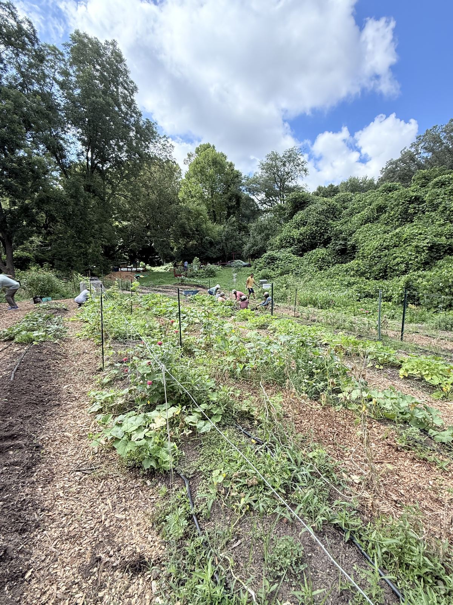
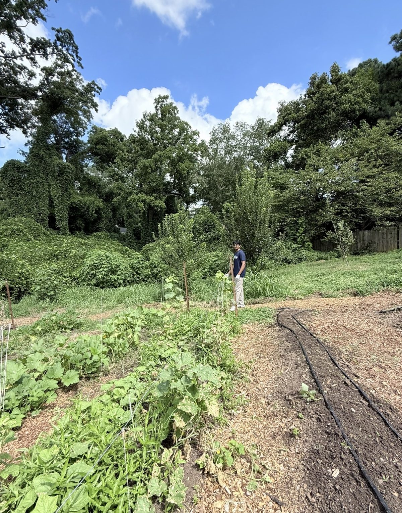
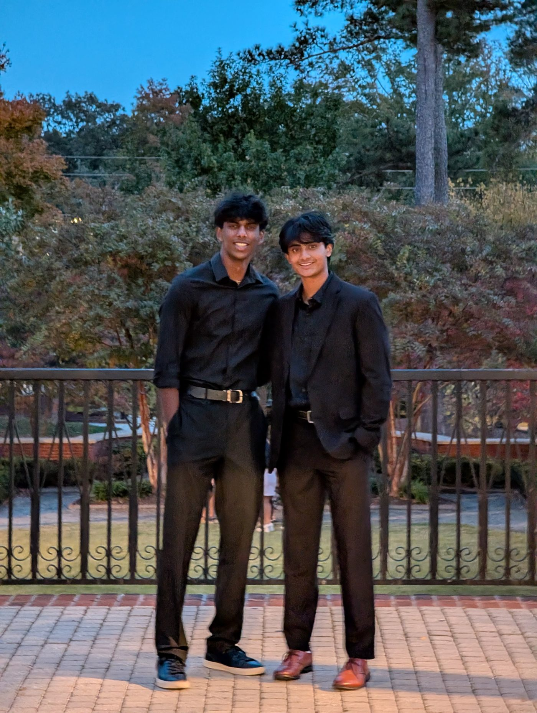

Founder of NextLine AI. Builder of community programs that have reached thousands of families across Atlanta. Currently studying the space where technology, business, and sustainability collide.
An AI-powered call answering and routing layer for service businesses. When a pest control company, HVAC shop, or locksmith misses a call, NextLine answers it, books it, or routes it to an available partner in our network. No customer left on hold, no revenue left on the table.
One night I found a snake in my garage and started calling pest control companies. I called more than 25 of them. Not a single one picked up. The snake didn't care that it was after hours, and neither did I.
That night I realized service businesses lose an enormous amount of revenue to a problem as simple as an unanswered phone. So my co-founder and I built the fix: an AI layer that answers instantly, qualifies the job, and routes it to whoever can actually take it.
We launched this year. Today NextLine serves 20+ paying businesses on monthly subscriptions, and the NextLine Network connects customers to available partners when the original company can't answer. We're now expanding beyond home services into new industries, including healthcare, where we've already signed our first partner.
Service businesses miss a huge share of inbound calls. Each missed call is a customer who books with a competitor in minutes.
AI answering that picks up every call, 24/7, books appointments, and captures jobs that would otherwise vanish.
The NextLine Network: priority routing that sends overflow customers to vetted partner businesses, so every call ends in a booked job.
Launched this year. 20+ paying clients on recurring subscriptions, now expanding into healthcare with our first partner already signed.
Startups, research labs, and classrooms. Every one of these taught me something I use at NextLine today.
Worked on developing marketing at OpenSwarm, a startup backed by Entrepreneur First. Helped shape how a technical product gets positioned, communicated, and put in front of the right audience.
Built and deployed AI voice agents, workflow automation systems, and lead generation tools for businesses across North America, working directly with founders and operators based in San Francisco. Delivered custom AI solutions to real clients across multiple industries.
Joined a biotech and entertainment startup valued at $75M after a $10M seed round. Implemented AI into core business operations and led marketing initiatives that scaled the brand to millions of viewers across social media.
Oversaw all technical operations and development at an early-stage San Francisco startup, collaborating with a high-profile network of professionals, celebrities, and influencers building the platform from the ground up.
Worked with Georgia Tech professors and students to facilitate STEM and leadership programming for 250+ students. Taught everything from introductory coding to mathematics, adapting curriculum complexity to each student's level while making technology genuinely exciting for young learners.
I've spent years building programs across Atlanta that fight food insecurity, teach kids, and put climate action in the hands of young people. This work is not a side note. It's the reason I build.


Leader of a food recovery program that has rescued over 4 million bagels since 2020. Partnered with major shops including Bagel Boys and Einstein Bros. Bagels to collect surplus bagels and redistribute them to hospitals, homes for underserved communities, and organizations in need across Atlanta, cutting food waste while fighting food insecurity head-on.
Founded a youth-led environmental organization featured in VoyageATL, combining educational comics with hands-on urban farming. Received funding in partnership with 21st Century Leaders to distribute fresh produce to families in need and reach children internationally through sustainability storytelling.
Read the VoyageATL feature →Received funding presented by Atlanta Mayor Andre Dickens to design and implement sustainability initiatives serving underserved communities across the Atlanta area. Engaged 200+ youth in hands-on environmental education and advocacy, driving real community impact through locally focused climate action.
Volunteered consistently since middle school, dedicating Saturday mornings to supporting adults with disabilities through physical and enrichment activities designed to promote growth, well-being, and real social connection. The longest commitment I've ever kept.
Served food to families in need on weekends, visiting multiple homes and partnering with community organizations to expand outreach and provide direct support where it's needed most.
Interned with an international nonprofit spanning Ecuador, Chile, India, Liberia, Ghana, and the US that teaches youth about health through comic-based storytelling. Helped create and distribute educational comics for underserved communities worldwide.
Brought coding and STEM education to students in grades 1 through 9 alongside Georgia Tech professors and students, designing engaging hands-on lessons that spark lasting interest in technology and science.
"The most interesting problems live where sustainability and technology refuse to stay in their own lanes."
I'm currently conducting research with professors at NYU and Stanford focused on merging sustainability and technology: how software, data, and AI can be pointed at climate and community problems instead of just convenience.
It's the academic version of everything else on this page. Green Ink and Green Teens taught me the problems. The research is how I'm learning to solve them at scale.
NextLine AI is the business I'm building today. Here's the mission I intend to pursue next, and why I'm already positioned to pursue it.

AI-driven sustainability and precision agriculture. The core idea is using AI, robotics, and biology together to reduce pesticide use, increase crop yields, and bring food security solutions to underserved communities across the US and globally. It's a massive market with deep social impact, and it's the natural continuation of everything I've already built.
I've received over $15,000 in funding in the Atlanta area, with $10,000 of that coming directly from Atlanta Mayor Andre Dickens. I've conducted research with professors at NYU and Stanford on merging technology with sustainability. And I've directly impacted thousands of families through this work, not in theory, but on the ground: urban farms, food recovery, and youth climate programs across Atlanta.
That combination of funding, research relationships, and real operational experience is rare in this space. I intend to use all of it.
Working on something at the intersection of AI, agriculture, or sustainability? I want to hear about it. Book a call and let's compare notes.
Played varsity since freshman year, made captain as a sophomore, and competed at the national level. I switched schools just to keep playing. That's how much I wanted it.
Playing at the gym with friends and watching the NBA. Staying athletic keeps everything else on this page possible.
A serious film lover. Great storytelling shows up everywhere in my work, from pitch decks to educational comics for kids.
Computer science, business, engineering, and cybersecurity. Different disciplines, one goal: understanding how things work and how to build them better.
Investor, partner, mentor, collaborator, or just curious. Pick a time that works and let's talk.
NextLine AI is raising, and my community projects always need fuel. If you believe in what's on this page, you can support it directly. Every contribution goes straight into building: product, outreach, and programs that reach real families.